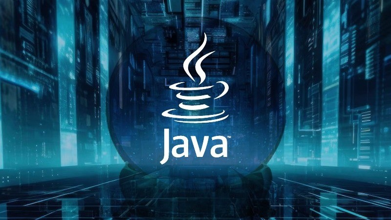
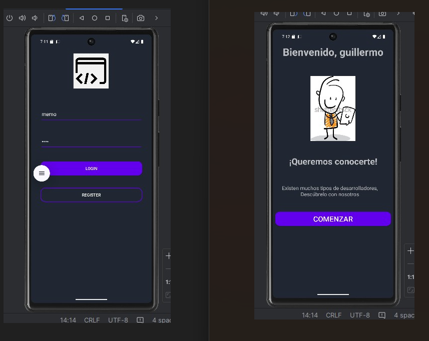
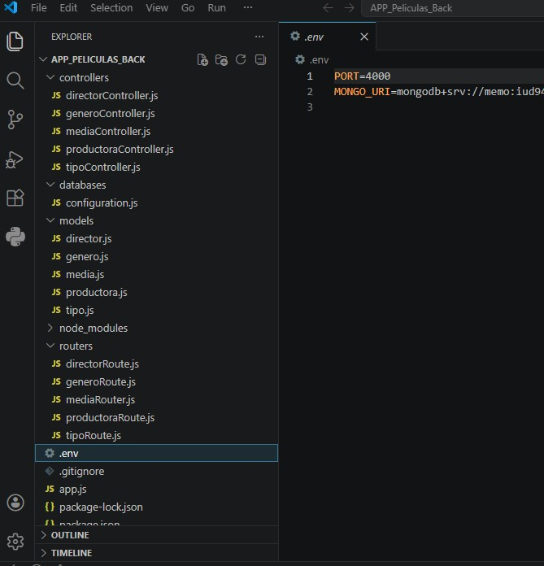
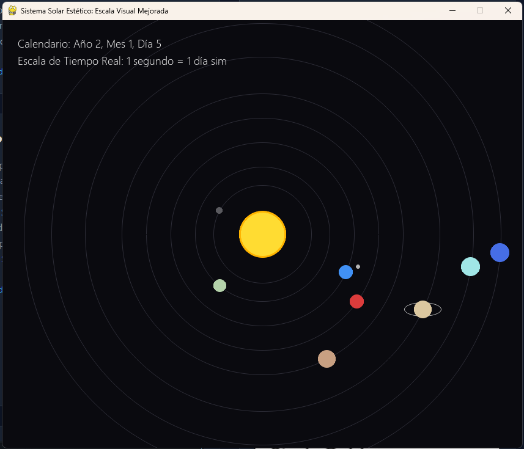
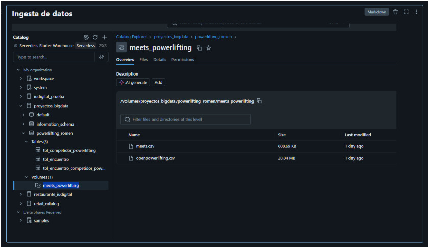
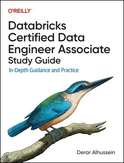

Una selección de mis proyectos demostrando capacidades en Backend, Frontend, Bases de Datos, Analisis y ML.

Blog Project (Java/Spring)
Desarrollo de una plataforma de gestión de contenido (Blog) utilizando Java y el framework Spring. El proyecto implementa una arquitectura Modelo-Vista-Controlador (MVC) para separar la lógica de negocio de la interfaz. Incluye operaciones CRUD completas para gestionar artículos, manejo de estado y persistencia de datos integrando una base de datos relacional.
🔗 Ver Código en GitHub

Android Login App
Aplicación móvil nativa para Android desarrollada en Java. El proyecto se centra en la implementación de un flujo de autenticación seguro, gestionando el ciclo de vida de las vistas (Activities/Fragments) de Android. Incluye validación de datos de entrada en el cliente, diseño de interfaz de usuario (UI) responsiva y gestión de credenciales.
🔗 Ver Código en GitHub

Conexiones de Bases de Datos
Proyecto práctico enfocado en la capa de datos. Demuestra la configuración y arquitectura de conexiones a bases de datos relacionales. Incluye la ejecución de consultas SQL, manejo de transacciones para asegurar la integridad de la información y la aplicación de buenas prácticas para prevenir vulnerabilidades como la inyección SQL.
🔗 Ver Código en GitHub

Retos de Lógica y Algoritmos
Colección de soluciones a problemas algorítmicos complejos y estructuras de datos. Las implementaciones en Python y JavaScript demuestran un enfoque en la escritura de código limpio (Clean Code), optimización de recursos y la aplicación de diferentes paradigmas, como la programación funcional y orientada a objetos.
🔗 Ver código en GitHub |

bigdata_powerlifting
Construcción de un pipeline en Databricks para centralizar información. El proceso abarca la ingesta de fuentes de datos, limpieza de valores nulos, transformación de formatos y carga optimizada, preparando los datos para herramientas de visualización o analítica avanzada. Jupyter Notebook].
🔗 Ver Código en GitHub

oreilly-databricks-dea
Ejemplos prácticos y ejercicios del libro "Databricks Certified Data Engineer Associate Study Guide", publicado por O'Reilly Media.
🔗 Ver Código en GitHub